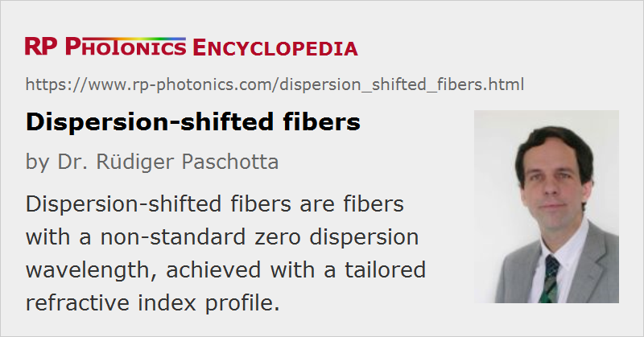

Dispersion-shifted Fibers
Definition: fibers with a non-standard zero dispersion wavelength
More general term: telecom fibers
German: dispersionsverschobene Fasern
Categories: fiber optics and waveguides, lightwave communications, light pulses
How to cite the article; suggest additional literature
Author: Dr. Rüdiger Paschotta
Standard telecom fibers exhibit zero chromatic dispersion in the 1.3-μm wavelength region. This was convenient for early optical fiber communications systems, which often operated around 1310 nm. However, the 1.5-μm region later became more important, because the fiber losses are lower there, and erbium-doped fiber amplifiers (EDFAs) are available for this region (whereas 1.3-μm amplifiers do not reach comparable performance). In this wavelength region, however, standard single-mode fibers (now sometimes called dispersion-unshifted fibers) exhibit significant anomalous dispersion. For linear transmission, this can be a problem, because it leads to significant dispersive pulse broadening, limiting the achievable transmission rates or distances. Therefore, so-called dispersion-shifted fibers [6] have been developed, which have modified waveguide dispersion so as to shift the zero dispersion wavelength into the 1.5-μm region. This is achieved by modifying the refractive index profile of the core. Common index profiles of dispersion-shifted fibers have a triangular, trapezoidal or Gaussian shape.
Zero chromatic dispersion is not necessarily ideal for data transmission. Particularly for the transmission of multiple channels (→ wavelength division multiplexing), four-wave mixing effects can be phase-matched and thus introduce significant distortions, if the dispersion is too weak. Therefore, it can be advantageous to use non-zero dispersion-shifted fibers [7], which are designed to have a small dispersion in the wavelength range of the data transmission, with the zero dispersion wavelength lying just outside this region. An alternative is to use dispersion-unshifted (i.e., standard) fiber with larger dispersion at 1.5 μm, combined with some kind of dispersion compensation.
There are also dispersion-flattened fibers with a relatively constant group delay dispersion over some wavelength range, i.e., low higher-order dispersion. They can, for example, exhibit near zero dispersion in the telecom C band. Such fibers are important for data transmission with wavelength division multiplexing and for adiabatic soliton compression. They often have a W-shaped profile of the refractive index, although profiles with a graded index and multiple steps have also been developed.
All fibers with tailored dispersion properties can be regarded as specialty fibers.
Suppliers
The RP Photonics Buyer's Guide contains 5 suppliers for dispersion-shifted fibers.
Questions and Comments from Users
Here you can submit questions and comments. As far as they get accepted by the author, they will appear above this paragraph together with the author’s answer. The author will decide on acceptance based on certain criteria. Essentially, the issue must be of sufficiently broad interest.
Please do not enter personal data here; we would otherwise delete it soon. (See also our privacy declaration.) If you wish to receive personal feedback or consultancy from the author, please contact him e.g. via e-mail.
By submitting the information, you give your consent to the potential publication of your inputs on our website according to our rules. (If you later retract your consent, we will delete those inputs.) As your inputs are first reviewed by the author, they may be published with some delay.
Bibliography
| [1] | L. G. Cohen et al., “Tailoring zero chromatic dispersion into the 1.5 μm-1.6 μm low-loss spectral region of single-mode fibres”, Electron. Lett. 15 (12), 334 (1979), doi:10.1049/el:19790237 |
| [2] | M. A. Saifi et al., “Triangular-profile single-mode fiber”, Opt. Lett. 7 (1), 43 (1982), doi:10.1364/OL.7.000043 |
| [3] | B. J. Ainslie et al., “Monomode fibre with ultra-low loss and minimum dispersion at 1.55 μm”, Electron. Lett. 18, 842 (1982), doi:10.1049/el:19820573 |
| [4] | V. A. Bhagavatula and M. S. Spitz, “Dispersion-shifted segmented-core single-mode fibers”, Opt. Lett. 9 (5), 186 (1984), doi:10.1364/OL.9.000186 |
| [5] | M. Wandel and P. Kristensen, “Fiber designs for high figure of merit and high slope dispersion compensating fibers”, J. Opt. Fiber Commun. Rep. 3, 25–60 (2005), doi:10.1049/el:19820573 |
| [6] | ITU standard G.653 (07/10), “Characteristics of a dispersion-shifted single-mode optical fibre and cable”, International Telecommunication Union (2007) |
| [7] | ITU standard G.655 (11/09), “Characteristics of a non-zero dispersion-shifted single-mode optical fibre and cable”, International Telecommunication Union (2011) |
See also: chromatic dispersion, telecom fibers, fibers, wavelength division multiplexing, specialty fibers
and other articles in the categories fiber optics and waveguides, lightwave communications, light pulses
|  |
If you like this page, please share the link with your friends and colleagues, e.g. via social media:
These sharing buttons are implemented in a privacy-friendly way!